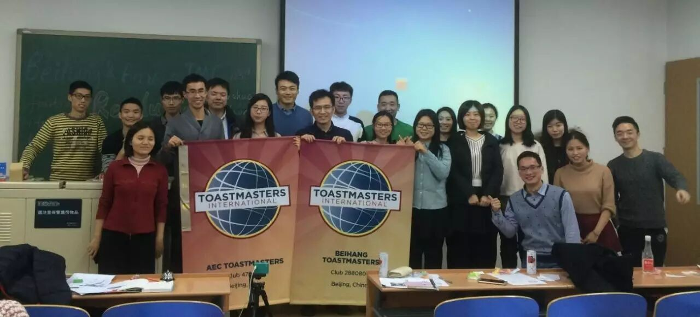
Beihang TMC just held a joint meeting with Ameco TMC, Ameco TMC is a club based on the Ameco corporation, where most of our friends(welcome your visit to Beihang University) work. here I want say:"有朋自远方来，不亦说乎？"
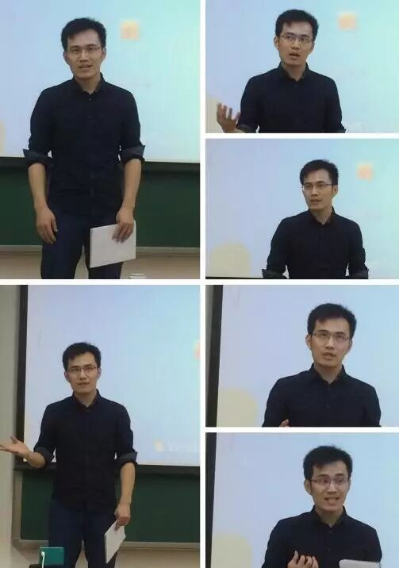
Pictures of President Joshua - the openning
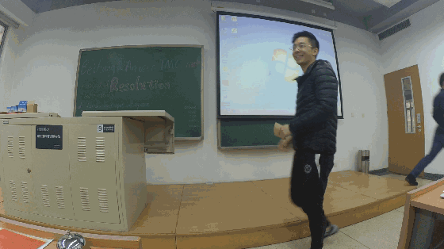
Handsome Table topic tomastermaster - Peter is coming
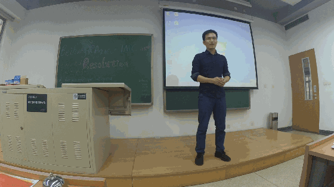
If you didn't come to the meeting, you wouldn't know what resolution Joshua had made this year, and i promised i won't tell you that he is going to achived his resolutions soon~~ to be safe and sound...oh yeah
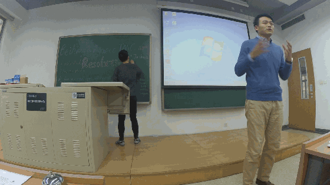
Even Kelson from Ameco TMC maybe never will have a time machine, but he still have this determination and resolution to retrospect this whole last year and review what he could do better if he travel back to 2015 and start again which is really respectable.
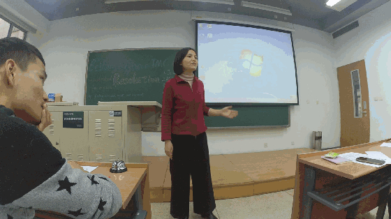
Of all those resolutions you have made last year, how many did you achived? Blair who just got the Champion in Xi'an conference shared us her story recently, a story based on herself about her career, and wish her future more rich and
successful.
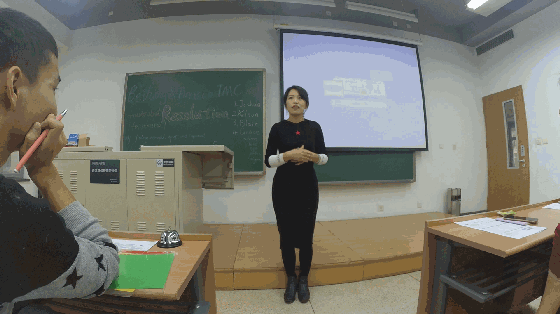
Welcome Grace back home, as one of BUAA before, it did really appreciate us to see your great speech in the toastemaster stage at Beihang University where you used to study and work despite the fact that now you work at another place, and your resolution to speak fluent English will became true this coming year i think~~
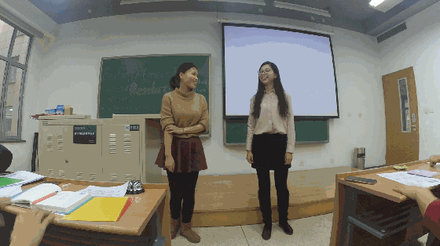
In the end of 2016,Mathilda made her resolution again(which probably means that she made the same one last year) and Tina just told her the truth to make her concious that the destination is still so far if Mathilda doesn't pay the effort.
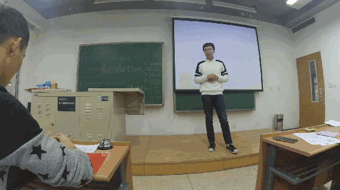
Frank is so confident and passionate in the stage and he is so devoted to her speech, what is the most formidable enemy between you and your resolution? Frank gave his answer in the excellent speech.
TTE-Daniel
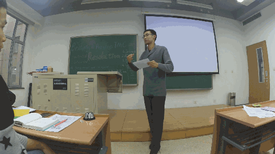
The first TTE as far as i experienced in toastmaster, and we invited Daniel from Ameco to give us a wonderful evaluation, in which he judged all those speakers in table topic part and gave them suggestions, it is really a helpful and great job !
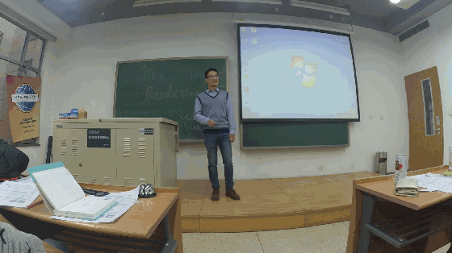
Andy titled his speech name as "letters", in memory of his middle school life when chatting with his pen pal？HAHA，you must have missed a interseting story andy prepared for us, maybe you would say :"oh, sad story, why your story always like it", but you would always get touched by his gentleness and smart ,and humorous, and mature.(hiahia) how i whish Andy could bring a happy-ended story to us next time~~
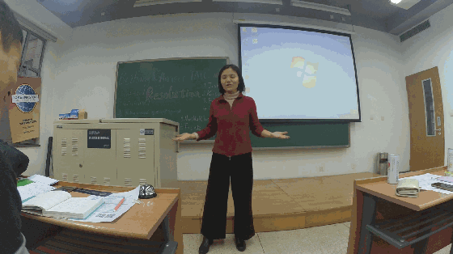
Recently School Bullying phenomenons is a hot topic bacause of some unhappy accident exposed, as one of the experiencer of School Bullying, Blair shared us her experiences and taught us to be brave and smart to face the School Bullying.thanks for Blair's speech.
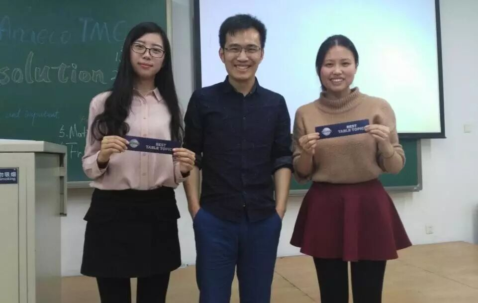
Best table topic speaker to Tina && Mathilda, for therir wonderful table topic speech
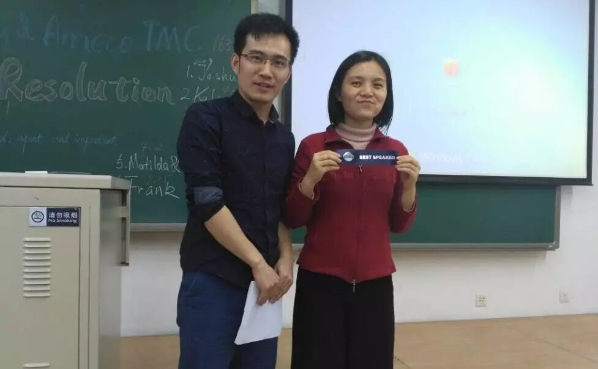
Best speaker to Blair, for her wonderful speech
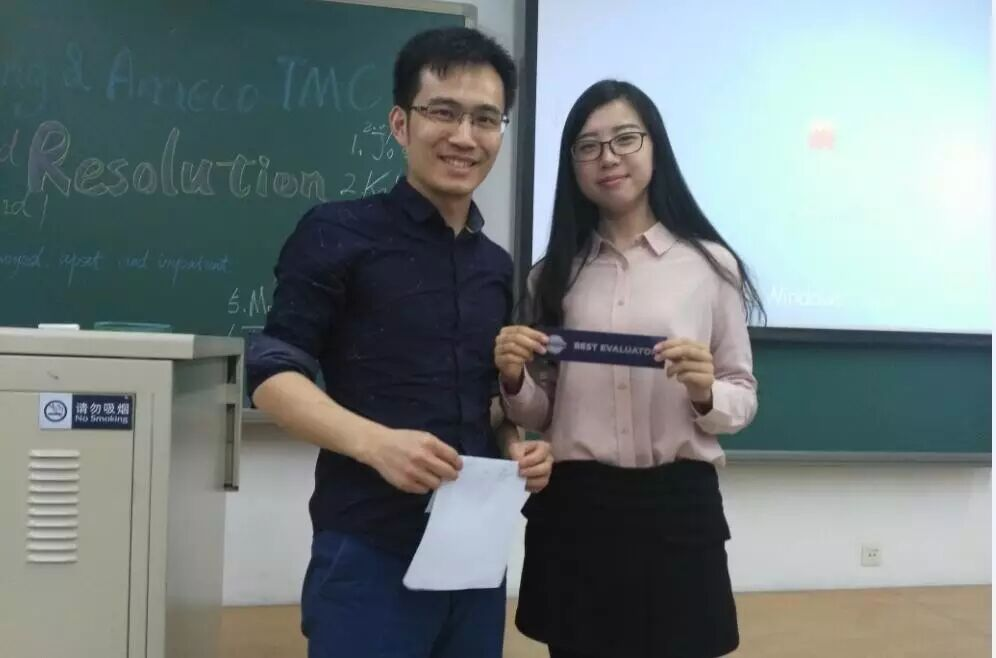
Best evaluator to Tina, for her great professional evaluation
Let's gather together next spring in Ameco TMC~~
the final group picture
Beihang toastmaster welcome everyone who loves comunication
byspeaking English as well as chinese
if you want your voice be heard in public without no fear
come to our stage and show you
meet you at every Friday night 7:30pm
position: please wait notification before each meeting.....
The video links down below
TT-Kelson 链接：http://pan.baidu.com/s/1nuMRIPj 密码：c795
TT-Blair 链接：链接：http://pan.baidu.com/s/1eSKExou 密码：rx1d
TT-Grace 链接：http://pan.baidu.com/s/1nvvxBkP 密码：i6li
TT-Mathilda && Tina 链接：链接：http://pan.baidu.com/s/1jI0n4fO 密码：uzjf
TT-frank 链接：http://pan.baidu.com/s/1gfoiqvp 密码：r4ra
CC-andy 链接：http://pan.baidu.com/s/1eSLuySa 密码：7qqi
CC-blair 链接：http://pan.baidu.com/s/1geNdVxx 密码：s0a9
Daniel-TTE 链接：http://pan.baidu.com/s/1o8m8jay 密码：duvr
together-photo 链接：http://pan.baidu.com/s/1hrRfFuc 密码：oop5
https://mp.weixin.qq.com/s/J1_dkWt1dnwVrtEMnkR0wQ
本页为抢救式本地归档，图文已永久保存。